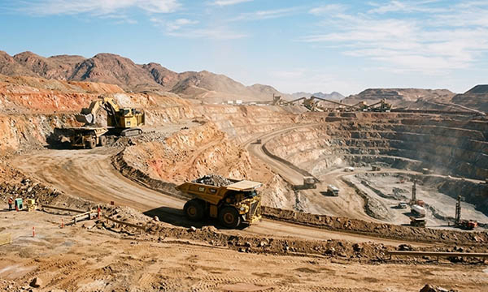

The mining industry is one of the most demanding and resource-intensive sectors in the global economy. In Germany, as well as in France, Italy, Switzerland, the United Kingdom, Norway, Austria, Poland, and the Benelux countries (Belgium, Netherlands, Luxembourg), mining operations supply essential raw materials such as metals, minerals, industrial aggregates, and energy resources. These materials are fundamental for construction, automotive manufacturing, electronics production, renewable energy systems, and heavy industry.
Mining environments are characterized by extreme mechanical stress, underground operations, heavy machinery, blasting activities, high temperatures, moisture, dust exposure, and hazardous gases. In such challenging conditions, operational safety and clear communication are critical. Industrial signage, warning signs, engraved labels, machine labels, safety decals, pipe marking labels, cable markers, type plates, industrial plates, rating plates, asset tags, barcode labels, QR code plates, warehouse signage, and CE marking plates are essential components of a structured and compliant mining operation.
At SignXpert, we provide durable, fully customizable signage and labeling solutions specifically designed for the mining industry in Germany and across Europe. Our products are engineered to withstand harsh environments while maintaining long-term visibility and regulatory compliance.
The Mining Industry: Supplying Europe’s Industrial Backbone.
Germany maintains important mining operations and raw material processing facilities that support its industrial strength. At the same time, Poland plays a significant role in coal and mineral extraction, Norway contributes to energy and resource production, Austria supports mining activities in alpine regions, and the United Kingdom continues operations in mineral extraction and quarrying. France, Italy, Switzerland, and the Benelux region are closely connected to mining logistics, processing, and material distribution across Europe.
Across all these markets, strict occupational safety regulations and EU compliance standards require clearly marked machinery, transport routes, hazardous zones, ventilation systems, and storage areas. Engraved industrial type plates, durable rating plates, CE marking plates, and permanent machine identification labels are mandatory for equipment transparency and regulatory inspections.
SignXpert supports mining companies throughout Germany as a primary market while delivering fast and reliably to France, Italy, Switzerland, the UK, Norway, Austria, Poland, and the Benelux countries.
Safety in Mining: Clear Industrial Labeling Saves Lives.
Safety is a non-negotiable priority in mining operations. Underground tunnels, open-pit mines, processing plants, and blasting zones present continuous risks. Clear and durable safety signage ensures that workers can quickly identify hazard zones, escape routes, restricted areas, explosive storage zones, and high-voltage installations.
Professional mining safety labeling includes warning decals, hazard signs, pipe marking labels, cable identification markers, machine labels, emergency exit signage, ventilation system plates, and industrial engraved plates. These labeling systems provide immediate visual guidance and support compliance with European workplace safety regulations.
In Germany and across Europe, mining facilities must ensure that safety information remains legible despite exposure to dust, moisture, vibration, chemicals, and extreme temperatures. High-quality engraved labels, stainless steel industrial plates, anodized aluminum type plates, and UV-resistant safety decals ensure long-term durability even in the harshest environments.
SignXpert manufactures mining-grade labeling solutions that maintain clarity and structural integrity under heavy industrial stress, contributing directly to accident prevention and workforce protection.
Efficiency, Maintenance, and Structured Operations.
Mining sites are often expansive and technically complex, involving conveyor systems, crushers, drilling equipment, ventilation systems, electrical installations, and heavy transport vehicles. Efficient production requires clearly marked equipment, structured logistics, and organized maintenance systems.
Machine identification plates, industrial rating plates, cable markers, pipe labels, asset tags, barcode labels, QR code tracking plates, warehouse signage, and control panel labels help maintenance teams quickly locate equipment and access technical information. When components are clearly labeled, servicing becomes faster, downtime is reduced, and operational continuity is improved.
In large-scale mining operations in Germany, energy resource facilities in Poland, extraction sites in Norway and Austria, and material processing plants connected to the Benelux logistics network, professional industrial signage plays a key role in maintaining structured workflows. Clear marking of transport routes, hazardous materials storage, and machinery zones improves coordination and reduces operational errors.
SignXpert provides durable industrial labeling solutions that enhance both safety and operational efficiency throughout mining environments.
Extreme Durability for Harsh Industrial Conditions.
Mining environments expose signage and labeling to constant abrasion, dust accumulation, moisture penetration, chemical exposure, UV radiation, and heavy mechanical vibration. Standard labeling solutions often fail under such conditions. High-performance engraved labels, stainless steel industrial plates, laminated safety decals, heavy-duty machine labels, and permanently bonded type plates are essential for long-term reliability.
Across Germany and other European mining regions, compliance inspections require permanently legible CE marking plates, rating plates, and equipment identification labels. Industrial engraving ensures that critical data remains visible even after years of intensive use.
SignXpert produces industrial signage and labeling solutions specifically engineered for extreme durability, combining corrosion resistance, mechanical strength, and high-contrast readability.
Why SignXpert is the Reliable Partner for Mining Industry Signage in Germany and Europe.
SignXpert is a trusted supplier of industrial signage, warning decals, engraved labels, machine labels, cable markers, pipe marking systems, type plates, industrial plates, rating plates, barcode labels, QR code asset tags, warehouse signage, and CE marking plates for the mining industry.
Our primary focus is Germany, while we offer fast and reliable delivery across France, Italy, Switzerland, the United Kingdom, Norway, Austria, Poland, and the Benelux countries.
With our user-friendly online system, mining companies can easily customize industrial engraving plates, safety signage, machine identification labels, hazard decals, cable identification systems, and compliance marking solutions tailored to their operational requirements. Fast production times help avoid delays in environments where continuous operation is essential.
Our labeling solutions are designed to withstand the most demanding industrial conditions while ensuring regulatory compliance and long-term visibility. Competitive pricing, precision manufacturing, and flexible customization make SignXpert the ideal partner for mining companies seeking durable and professional industrial labeling systems.
By choosing SignXpert, mining operators in Germany and across Europe gain access to high-performance signage and labeling solutions that enhance safety, improve maintenance efficiency, support regulatory compliance, and contribute to reliable and structured mining operations in even the harshest environments.